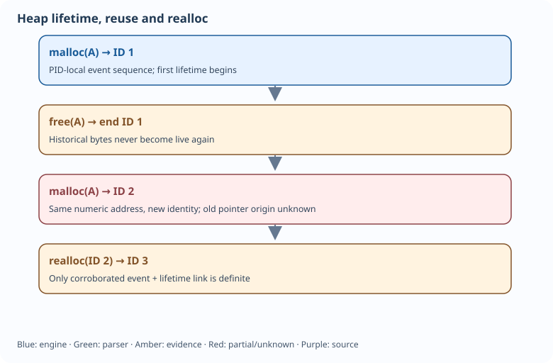

Allocation events, lifetimes and realloc #
Level 1 · Intuition #
The same numeric address can host multiple unrelated allocations over time. Stage 1 assigns a lifetime ID to each intercepted allocation, records events that affect it, and keeps snapshots immutable. A current pointer address can match a block's extent without proving which lifetime produced the pointer. realloc can retire one lifetime and create a linked successor; a failed call must not retire the original.


Level 2 · Telemetry → reconstructed lifetimes #
The debug binary links c_runtime/alloc_tracker.c with --wrap for malloc, calloc, realloc and free calls from linked objects. A fixed-size C table tracks address→local-ID/size; each wrapper calls the actual allocator once, writes a PID/monotonic per-PID sequence line to a dedicated file, and preserves the return value. A recursion guard prevents tracker reentry. Rust's EventTailer reads completed records; HeapTimeline::ingest reconstructs events and block state, tracks gaps/duplicates/out-of-order rows and assembles AllocationLifetime. Events are drained at stops before source state is read. Caller PCs can be resolved while the inferior is alive using /proc/PID/maps, ELF load bias and addr2line; unresolved PCs stay recorded.
malloc(A) creates ID 1. free(A) closes its lifetime; later malloc(A) starts ID 2 even at the same address. A successful moving realloc retires an old ID and gives the new block a linked ID; the current C wrapper also issues a new lifetime ID for a successful in-place realloc (ok_same), even though the address does not change. A failed realloc leaves the original block alive. Under glibc, realloc(ptr,0) may free the original and return NULL; the engine can emit a terminal Reallocated event with the same old/new ID, null address and size zero. This is not a new predecessor edge. Successful successor identity is certified by event/lifetime validation, not by matching addresses.
| Evidence | Meaning | Caution |
|---|---|---|
HeapEvent | Ingestion-order wrapper event, PID, sequence, IDs, kind, optional address | ID 0 is untracked; internal library allocators may be invisible |
HeapBlockInfo | Final/historical state, optional realloc predecessor | Freed block bytes are historical; check observed_at_stop |
AllocationLifetime | PID, allocation sequence, optional free sequence | Complete observed-PID history is not a fork census |
HeapHistoryCoverage | Gaps, transport, ACK, caps, process scope | complete=true has a specific observed-PID scope |
Level 3 · C/Rust boundary and example #
// Source: fixtures/c/realloc_move.c (excerpt)
char *p = malloc(32);
char *guard = malloc(32);
char *next = realloc(p, 1024 * 1024);
if (!next) { free(p); free(guard); return 1; }
free(next);For successful movement, the raw event carries old_allocation_id, a new allocation_id and the recorded PID/sequence; the old lifetime ends at that event's sequence. In the final parser, heap(new_id).realloc_confidence is Definite only with matching creation event, predecessor creation, compatible same-PID lifetime boundaries and complete verified observed history. Partial/legacy evidence remains candidate or unavailable. src/trace_parser/validation.rs::realloc_link performs shared relationship checks; structural contradictions and cycles cannot become definite.
- C:
__wrap_malloc,__wrap_calloc,__wrap_realloc,__wrap_free,cte_emit_locked,cte_after_fork_childinc_runtime/alloc_tracker.c. - Rust:
src/allocation_tracker.rs::{parse_event_line, EventTailer, HeapTimeline::ingest, verify_event_status};src/trace.rsbackfills snapshots and builds final state. - Parser:
TraceStore::heap_events_for_allocation(id)uses a position index;ValidatedSemanticView::heap(id)qualifies identity and realloc separately. See schema fields.